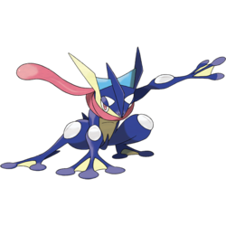

Greninja is a bipedal, frog-like Pokémon. It is a Water and Dark-type known for its speed, agility, and ninja-like fighting style. It has a sleek dark blue body with a yellow chest and abdomen, a pink tongue wrapped around its neck like a scarf, and powerful limbs that let it move quickly and silently. Greninja can compress water into various weapons to slice up opponents, most commonly in the form of throwing stars that can split through metal. It is a highly skilled and intelligent Pokémon that relies on speed, stealth, and strategy during battles. A fun fact about Greninja is that it has two alternate forms: Ash-Greninja and Mega Greninja.